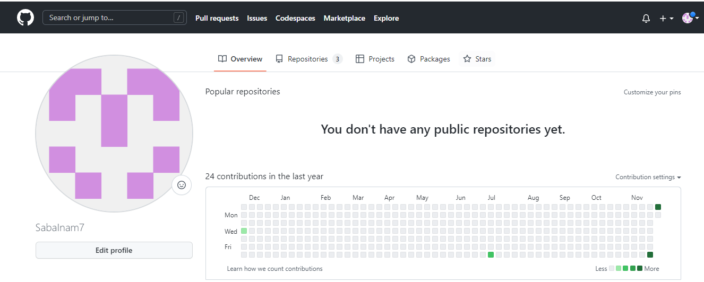
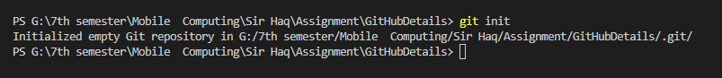
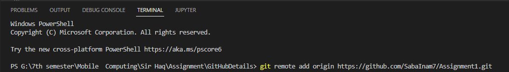

Git Status
The git status command is used to show the status of the git repository. This command displays the state of the local directory and the staging area.
Command: git status

GitHub is a code hosting platform for collaboration and version control.GitHub lets you (and others) work together on projects.
You can use organizations for free, with GitHub Free, which includes limited features on private repositories.If you don't take the right security measures with passwords and sensitive information, using GitHub may become dangerous.
The git init command creates a new Git repository. It can be used to initialize a new, empty repository. Most other Git commands are not available outside of an initialized repository, so this is usually the first command you'll run in a new project.
Command: git init
To add a new remote, use the git remote add command on the terminal, in the directory your repository is stored at.
Command: git remote add origin URL
The git status command is used to show the status of the git repository. This command displays the state of the local directory and the staging area.
Command: git status
The git add command adds a change in the working directory to the staging area. It tells Git that you want to include updates to a particular file in the next commit. However, git add doesn't really affect the repository in any significant way—changes are not actually recorded until you run git commit

The "commit" command is used to save your changes to the local repository. Note that you have to explicitly tell Git which changes you want to include in a commit before running the "git commit" command. This means that a file won't be automatically included in the next commit just because it was changed. It also includes a message for readability to remember purpose of that Commit.
Command: git commit -m "message"
This command Lists all branches present in the repository(the asterisk denotes the current branch)
Command: git branch

Command: git branch [branchName]